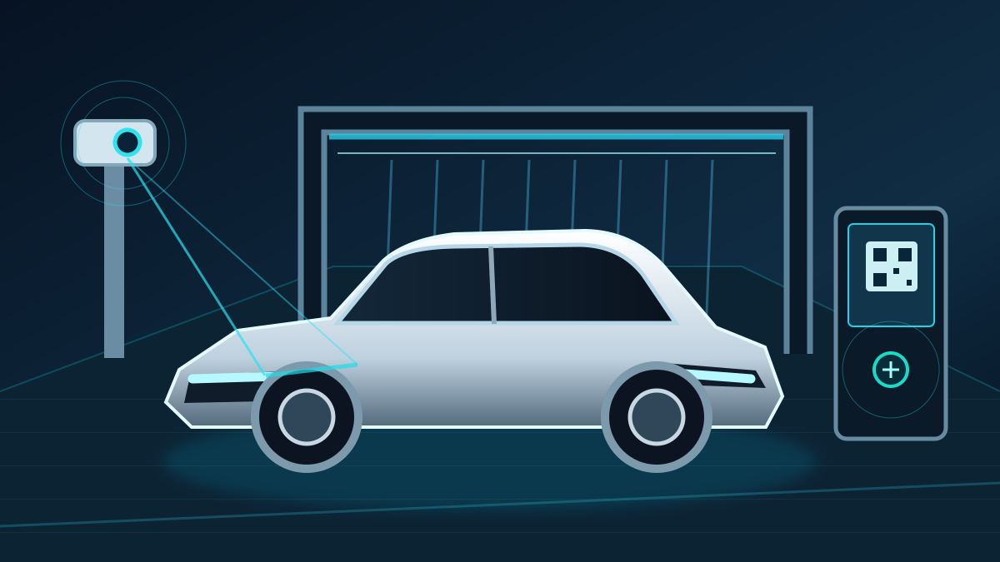

SHINOX / TECHNOLOGY
ShinoX Smart License Plate Recognition & Flexible Payments
From arrival and member identification to payment and wash activation, ShinoX connects vehicle recognition and payment options to support a smoother unattended car wash experience.
繁中 ↗
01 / RECOGNITION
Smart License Plate Recognition
Give every vehicle a connected digital wash identity.
An entrance camera can capture a vehicle's plate and match it with a member account, reducing manual entry and on-site verification. Operators can configure single washes, prepaid packages, multi-wash passes or monthly memberships to fit their business model.
- Automatic plate recognitionRead a plate on entry to support member identification. Performance depends on camera configuration, lighting and plate condition.
- Connected member recordsLink vehicles to membership, prepaid balance, reward points, selected plans and wash history.
- Flexible wash plansConfigure one-time purchases, wash passes, member offers and subscription-style plans where supported.
- Digital wash recordsRecord identification, payment and wash events for operations, customer support and analysis.
02 / SMART PAYMENT
Flexible Payment Integration
Let customers pay their way, while keeping transaction records organized.
Depending on the project, ShinoX can integrate linked cards, member points, mobile wallets and physical prepaid cards. Available methods depend on payment-provider agreements and completed system integrations.
- Linked credit cardsMembers can link cards through an authorized payment flow for subsequent transactions where supported. Sensitive card data is handled by a compliant payment provider.
- Member pointsReward points or prepaid balances can be applied to a wash according to operator-defined redemption rules.
- Mobile paymentsPotential integrations include LINE Pay, PX Pay Plus (全支付) and JKOPay (街口支付), subject to availability and provider approval.
- Physical prepaid cardsUse a compatible reader to identify a prepaid card, check balance and record a wash transaction.
PAYMENT OPTIONS
Flexible Payment Integration
Let customers pay their way, while keeping transaction records organized.
Linked credit cards
Members can link cards through an authorized payment flow for subsequent transactions where supported. Sensitive card data is handled by a compliant payment provider.
Member points
Reward points or prepaid balances can be applied to a wash according to operator-defined redemption rules.
Mobile payments
Potential integrations include LINE Pay, PX Pay Plus (全支付) and JKOPay (街口支付), subject to availability and provider approval.
Physical prepaid cards
Use a compatible reader to identify a prepaid card, check balance and record a wash transaction.
Potential mobile payment integrations
The names below indicate possible integration targets, not confirmation of live support or partnership.
03 / OPTIONAL PAYMENT KIOSK
Optional Touchscreen Cloud Payment Kiosk
For locations that need a walk-up payment option, a touchscreen cloud payment kiosk can complement license plate recognition and member payments. The kiosk provides a guided on-site checkout experience and can connect transaction records with the management platform, depending on the installed modules.
Touchscreen selection
Choose wash packages and follow on-screen payment steps.
Credit card payments
Accept card-present payments through a compatible, approved payment terminal.
Receipt printing
Print a transaction receipt using an optional receipt printer.
Invoice support
Issue or print compliant invoices through a configured invoicing service and compatible printer, where available.
Cash change
Accept cash and dispense change when fitted with compatible bill/coin acceptance and change-dispensing hardware.
Cloud transaction records
Synchronize payment status and transaction details with the management system where integrated.
All functions are optional and depend on the payment terminal, printer, cash modules, invoicing provider and local regulatory requirements.
HOW IT WORKS
Five-step smart wash journey
Bring identification, payment and equipment activation into one customer flow.
CLOUD OPERATIONS
Cloud Operations & Membership
Connect equipment events with actionable business records.
Depending on the installed modules, operators can review payments, prepaid balances, point redemption, wash counts and revenue. Organized records can help with reconciliation, member promotions and operational decisions.
- Transaction and revenue records
- Membership balances, points and offers
- Wash counts and equipment activity
- Reporting and exports where configured
This page describes ShinoX system capabilities and potential integration options. Actual availability of payment brands, card linking, automatic charging, recognition accuracy, equipment controls and reporting depends on selected modules, provider agreements, site conditions and project acceptance. Image is illustrative.